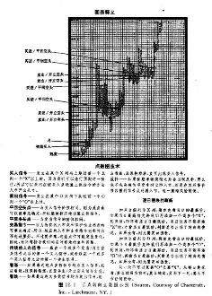
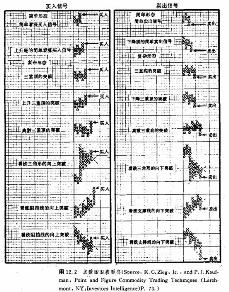
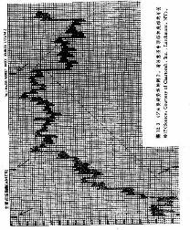
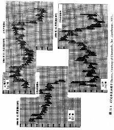
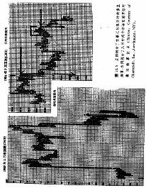
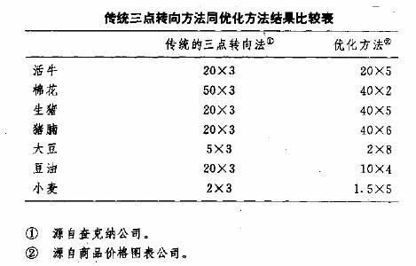
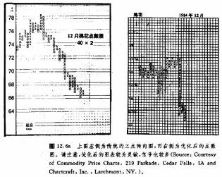
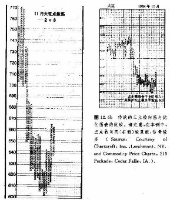
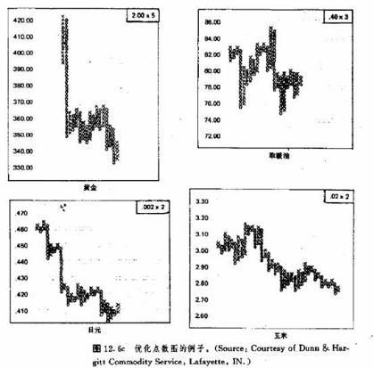
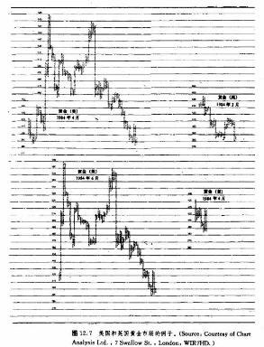

第十二章 三点转向和优化点数图
引言
1947年，A·w·科恩发表了一本关于点数图的书《股市时机抉择》。次年，该书易名为《点数图交易法》(同一年，查克纳每周图表服务也开通了)。此后，该书一再修订再版，并且收进了商品和期权的有关内容。现在这本书的名字是《怎样使用三点转向点数图法进行股票交易》，软面装帧，查克纳公司出版。本书是关于三点转向点数图技术的经典之作，其中介绍了只用报纸上的价格报告来制作点数图的办法。
原先的一点转向法需要日内价格资料才能制作出来。三点转向法是对一点转向图的压缩，主要是针对中期趋势分析的。科恩认为，既然在股票价格上每天一般很少出现三点转向的情况，那么，在我们构造三点转向图时，也就不必采用日内价格。因此，他决定只选取每日的最高价和最低价，而这些资料在大多数金融报纸上都是常备的。这么一变通，就极大地简化了点数图技术，从而一般交易者也能用得上它了。这也是查克纳图表系统的基础。
三点转向图的画法
这种图表的构造方法相对简单些。第一步，我们先按照日内点数图的办法设置好价格轴。在查克纳图表服务中，有现成的图表，其中每点取值、价格轴都是现成的。在这里，也是用“X”表示上升，“O”表示下降，两种列交替出现（见图12.1）。
我们只需要每天的最高价和最低价，就能画出这些“X”和“O”来。如果在开始画图时，前一列为X列(表示价格上涨)，那么我们就看当日的最高价。要是当日的最高价要求我们再填上一个或几个X符号，不妨照办。这样，当日的图表就画好了。请记住，直到当日最高价为止，所有该填的空格都不可漏过。其中最高价的零头应忽略不计。下一天，我们仍然只看最高价，只要它持续出现新高，并且允许我们在本列至少添上一个“X”，那么我们就重复上面的程序，照填不误，而不考虑各日的最低价。
迟早有一天，当日的最高价同前一个X列相比，不够加一个“X”，这时，我们就要看当日最低价了，看看它是不是够得上三点转向的要求。如果足够了，就向右移到下一列，从原位置往下一格起，直到这个最低价的位置，统统填上“O”，表示价格下跌。因为现在我们处于下降的列中，所以次日我们就先看其最低价，看看能不能继续画“0”如果至少能添一个O，那就加上。仅当某日的最低价连添加一个“O”都不足够的时候，我们才重新考察这一天的最高价，看看它是否满足向上的三点转向要求。如果满足，则移到下一列，开始新的X列。
也有些日子用不着画图。只要当日的价格区间不大，一方面，其上边(或下边)不足以在当前列上添上与当前列一样的符号点，另一方面，另一边又达不到三点转向要求，那么我们就省事了。请记住，点数图的目的是记录纯粹的价格变化，而不考虑时间因素，同时，对于同一天，我们切不可既画“O”又画“X”。如果这样做，就不恰当了。在同一天里，我们要么画“O“，要么画”X“，不能两个都画。
最后这一点给我们带来了一个有趣的两难间题。例如，要是有一天，其最高价够得上再添一个或几个“X”，而最低价又够得上向下的三点转向要求，我们该怎么办呢?这种现象通常出现在价格大范围地波动的反转日里，开市时价格上涨，后来价格却急剧下跌。在这种情况下，照规矩，我们应当作“X”，而忽略当日的最低价。然而这样一来，交易者就不得不放弃这个可能构成反转信号的重要信息。处于这种局面，朋友们只好自己抉择了。我们可以先给当前列添上“X”，再作新的三点转向的列。这样做虽然有悖于规则，却有益于交易。我个人对这种情况的处理办法是，服从规则，照章添“X”，但在下一列画上一行小点儿(不是X点也不O点)，以表示当天确实发生了显著的向下反转现象。朋友们不妨各随已便。

图表形态
图12.2例示了1种价格形态，它们是此类点数图中最常见的8种买入信号,8种卖出信号。罗伯特，E.戴维斯在1965出版了《利润和获利能力》一书，其中对这16信号分别进行了测试。戴维斯采用的资料选自从1914年到1964年的2种普通股票，以及从1914年的1964年的1000种股票。毫不夸张地说，他的结果令人耳目一新。从多头和空头两方面的模拟记录来看，其中80%以上的交易都是盈利的，平均盈利率为25%。这项研究表明传统的点数图技术在普通股的交易中是相当成功的。
在各个形态中，最常见者(盈利率为56.9%)为B—2，上升底中的简单买入信号。若居于第二位的是S—2，下降顶中的简单卖出信号(盈利率为56.4%)。在买入信号中，“盈利率”(盈利次数所占的百分比)最高的是B—3，三重顶中的突破信号，达到了87.9%。在卖出信号中，与之对应的是S—3，三重底中的突破信号，其盈利率甚至更胜一筹，达93.5%。此后，戴维斯还对商品市场也进行了有关的研究，在后面谈优化问题时我们再说。
现在我们就来看看这些形态。右面一列，从S—1到S—8，都是左侧第1列各形态的镜像，所以我们集中讨论买入信号这一边。头两个信号，B—1和B—2，都属于简单形态。在这些简单的看涨买入信号中，总共只需要三列，其中第二个X列比第一个X列高出了一格。B—2与B—1大体相似，差别仅仅在于这里有四个列，其中第二个O列的底高于第一个0列的底。B—1显示的是简单的向上突破阻挡的信号，B—2
中也具备同样的突破信号，但同时兼有底部上升的看涨特点，因此，B—2形态比B—1稍稍坚挺些。
第三个形态(B—3)，是三重顶中的突破信号。由此往下，都属于复杂形态。注意，在每个复杂形态中都包含了上述简单的买入信号。同时，越往下面的形态，信号越强。对三重顶中的突破信号来说，强就强在它共涉及到五个列，其中两个X列的顶都被向上穿越了。请记着，底部形态越宽，则后来市场上涨的潜力越大。下一个形态(B—4)是上升三角形顶的突破信号。因为它的底和顶均处于上升态势之中，所以它比B—3的信号更强。离散三重顶的突破信号(B3的信号更强。离散三重顶的突破信号(B—5)还要强劲些，因为它有七列，其中三个X列的顶都被向上超越了。
看涨三角形向上突破信号(B—6)兼并了两个信号。首先，它必须包含简单的买入信号。其次，它必须冲破上方的趋势线。(我们在下一节讨论这类图表的趋势线分析)。形态B—7，为向上突破看涨阻挡线的信号，其意义是不证自明的。
最后一个形态是向上突破看跌阻挡线信号（B一8），其中也包含了两方面要述素，既必须向上突破下降趋势线，也必须满足简单的买入信号的要求。当然，上述关于从B—1到B—8的各个形态的讨论，统统适用于从S—1到S—8的各形态，只是后者的价格方向冲下。
上述形态在商品市场上的应用方法同在股市上的用法有所不同。一般来说，这1种信号均适用于股市交易。但是，因为期货市场的价格变化具有瞬息万变的特点，所以从它们的图形上较少见到上述复杂形态。因此，这里对简单的信号就大为倚重了。很多期货商甚至仅仅采用简单信号。如果交易商情愿迟一步，等复杂的(也更强的)形态出现后才行动的话，往往就会错过许多获利的交易良机。
然而，只靠简单的信号来做交易也会遇上问题，因为它们出现得太频繁了。如果一位交易商同时追踪好几个市场，并且他力求采纳所有的交易信号，那么，其资金势必大为分散。对于资金力量较单薄的，或者不希望信号过紧的朋友来说，倒是可以利用复杂形态来作为过滤器。例如，我们可以只在出现了三重顶或上升三重顶形态的情况下，才开立新头寸。这样，信号就减少了，相应地也就提高了成功的机会。
但是，这里我们必须强调一个重要的区别。上面所讨论的，主要是采用简单的或复杂的信号来建立新头寸的同题，不管是开多头，还是开空头。谈到入市，交易商是可以自主地选择采用简单信号还是复杂信号的。然而，在处理已有头寸时，只要在其相反的方向出现了任何一种简单信号，我们就必须平仓出市。这就是说，只要发生了任何简单的卖出信号，就必须把已有的多头头寸全部平掉。只要发生了任何简单的买入信号，我们就必须把已有的空头头寸全部平掉。在这种情况下，到底该不该在平仓的同时加码开立新头寸，或者先平掉旧头寸，然后等到更强的信号发生后，再开新头寸，这取决于交易者本人。但是，只要一出现同已有头寸方向相反的简单信号，那就没有二话，先平回旧头寸再说。

趋势线的画法
我们也可以利用趋势线来给基本的信号加上过滤器。在我们谈日内点数图时，曾经指出，在那里，趋势线和管道线的画法符合传统的做法。但是在三点转向图上，情况就不同了。在这里，我们是以45°倾角的直线来充当趋势线的。同时，趋势线也不一定非得通过前一轮的峰或谷不可。
基本的行涨支择线和着跌阻挡线
这两者属于基本的上升趋势线和下降趋势线。因为这类图表具有极强的浓缩特性，所以过去那样连接峰点或谷点的做法是行不通的，因此，我们采用45°直线。在上升趋势中，看涨支撑线是从最低的0列的最下方的0点出发，以45°倾角向右上方引出的一条直线。只要价格居于该趋势线的上侧，那么我们就认为主要趋势是牛市。在下降趋势中，看跌阻挡线是从最高的X列的最上方的X点出发，以45°倾角向右下方引出的一根直线。只要价格居于这条下降趋势线的下侧，那么该趋势就是熊市（见图12.3和12.4）。
有时我们也必须对上述直线加以调整。举例来说，在上升趋势中，有的市场调整先跌破那条支撑线，然后却又后折回来，恢复原先的上升势头，在这种情况下，就必须从这个新的反弹低点出发，作一条新的45°支撑线。有时候上升趋势非常迅猛，起先的上升趋势线就距离后来的价格变化已过远，在这种情况下，为了找出“最适”支撑线，也应该从更近的低点出发，重新画趋势线。
管道线
在这里，我们也可以用趋势线的平行线作管道线，但它的可靠性比基本趋势线差得很远。在上升趋势中，管道线称为看涨阻挡线。在下降趋势中，管道线称为看跌支撑线。一旦我们确认出了上升趋势，并作出了相应的上升趋势线，就可以作出与之平行的向右上方伸展的管道线。这条阻挡线是从整个形态最左侧的第一个O列中引出的。这个O列至少要在管道线外露出两个“O”点。在有些情况下，上升趋势会在管道线上停住。
如果价格向上穿越了管道线，我们就应当向图表更左边找出下一个O列，从中引出第二条阻挡线。价格或许会在第二条阻挡线上停止上升。如果又突破上去了，那么我们就再作第三条线、正如前面所交代的，这些直线在重要性上处于次要地位，但是，我们不妨采用它们所提供的参考点，平回部分头寸，实现部分利润。如果市场还有力.童越过这些阻挡线，那就构成买入信号，其价格上涨的目标便是下一条管道线。
这一点正是形态B—7—向上突破看涨阻挡线信号的依据。
在下降趋势中，看跌管道线，或称看跌支撑线，平行于基本的下降 趋势线，也向右下方伸展。其出发点在形态最左侧的第一个X列中。准确地说，这个X列至少应当在管道线外露出两个X点。如果这根线被跌破(通常都是这样的)，我们就应再作第二条乃至第三条支撑线，它们是相继地从更左侧一列X列中出发的。
请注意，所谓价格穿越这些管道线，是指完完全全的突破，这一点很重要。如果只有一个X点或者O点落在趋势线上，不能算穿越。管道线的用途主要在于选择时机。我们可以借助它们来把握部分平仓获利的点，却不应该据之开立同主流趋势方向相反的新头寸。然而，在我们决定开立新头寸的位置时，主要上升趋势线或下降趋势线都是特别有效的过滤措施。·它们的主要功用就是保证我们的行动同主要趋势的方向一致。
例如，在上升趋势中，只有在价格保持在主要上升趋势线之上的条件下，我们才能实施点数图的买入信号。在这种情况下，任何的卖出信号都只能用来达到平掉已有头寸的目的。只要价格维持在上升趋势线的上方，我们就不应开立任何空头头寸。当价格处于下降趋势时，只有在主要下降趋线的下方，才能开立新的空头头寸。而简单的买入信号只可用作止损出市点。只要价格保持在下降趋势线的下方，就不可以开立任何多头头寸。


测算技术
在前一章我们介绍到，在日内点数图上，我们可以采取横向数列法来测算价格目标。在这里的变通点数图上，我们则可以同时使用两种不同的测算技术—横向沮算法以及垂直测算法。这里的横向测算法与数列法类似，但有些许改动。首先，我们数出底部或顶部形态的列数，然后，再把所得的列数乘以转向规定的数值(或者每次转向所要求的价格变化的数值)。以黄金点数图为例，假定每点取值为$1.00，并采用三点转向规定。从图上的底部形态我们共数出10列，因为这是个三点转向图，所以转向规定数值为$3.00（3×$1.00），10乘以$3，得到$30。最后，我们在底部形态的价位上加上这个结果，或者从顶部形态的价位上减去这个结果，就得到了价格目标。我个人一般只计点数，也有人喜欢在计算中把转向规定(本例中为三点)乘以实际的每点美元值。实际上，哪样做法都可以。我们之所以要把形态的宽度乘以转向数值，是因为需要补偿此类转向图中的浓缩效应。
垂直测算法更简便些（见图12.5）。首先，我们测出新趋势的第一列所包含的点数。在上升趋势中，测算第一个上升列中X点数，而在下降趋势中，测算第一个下降列中0点数，然后把所得数字乘以3(或者转向规定数值);最后把所得的积在底部价位中加上，或者从顶部价位中减去，就得出了相应的价格目标，在三点转向图上，上述方法实质上是把新趋势的初始动作乘以3。如果在图上出现的是双重顶或双盆底我们就相应地采用其中第二个0列或X一列来进杆垂直测算。从横向测算法和垂直侧算法的比较来看，后者更简易、更可靠。
交易策略
下面，我们就来谈一谈采用这里的点数图来抉择入市和出市点的各种方法。
1.采纳简单的买入信号，平回已有的空头头寸，或者开立新的多头头寸。
2.采纳简单的卖出信号，了结已有的多头头寸.礴著并立新的空头头寸。
3.把简单的信号保仅用在平仓了结旧头寸上，而必须有复杂形态的信号出现后才开立新头寸。
4.趋势线可以用作过撼器。价格在趋势线之上，则持有多头，在趋势线之下，则持有空头。
5.在上升趋势中当市场跌破前一个O一列的最低点后，立即卖出止损;在下降趋势中，当市价涨过前一个X列的玻高点后，马上买入止损。
6.有以下各种入市机会:
a.在上升趋势中发生明确的向上突破时，买入。
b.当向上的突破信号出现后，等待下一轮三点转向(市场反扑)的机会，趁低价买进。
c.在市场调整中，如果朝原趋势方向出现了三点转向，则买入。这里，我们不仅要求三点转向的方向与原势方向一致，而且还应当在最近的O列的下方为这个头寸设置紧凑的止损点。
d.如果第一次向上突破之后，又出现了第二个向上突破信号，则买入。
从上列各项我们可以看出，点数图有很多种使用方式。只要我们充分理解了它的基本原理，那么，关于最佳人市、出市点的选择，就具有了无穷的灵活性。本节最后，我们还要补充两点——关于头寸加码的金字塔法，以及如何对付过分延伸的市场动作。

金字塔法
所谓金字塔法，是指在市场朝我们预期的方向持续发展的情况下，如何增加现有头寸的方法.当趋势的第一个信号出现时，我们相应地买入(或卖出)。随着市场沿着既定方向继续发展，在图表上就会再度出现同类的信号。那么，后来这些重复的信号就可以用来扩大已有的头寸。当然，不论我们是否另加头寸，都应该水涨船高地逐步抬高止损指令的水平，把它置于最近的0列的稍下方(相应地，在下降趋势中，应当逐
步降低止损指令的水平，置之于最近的X列的稍上方)。这种方法称为“跟进止损法”，利用这个办法，交易者既可以充分保留已有的头寸，同时又能够保护累积的帐面利润。
如何对付过分廷伸的市场运动
在趋势发展过程中，会间断地出现与趋势相反的调整。交易商可以利用这些价位为标志，在原趋势恢复后跟进地设置止损指令的水平。但是，如果在三点转向图上，在趋势发展过程中不出现三点转向调整，那么我们怎么处置止损水平呢?在这种情况下，交易商面前是一个长长的X列(上升趋势中)，或者一个长长的O列(在下降趋势中)。这类市场状况又被称为“一杆子捅到底”，就是说只有一长列0点或者X点，而没有调整。交易商既希望始终站在趋势一边，又企图保护账面利润。对此，我们至少有一个办法。等市场不间断地变化了10点或更多后，我们就在这个可能出现三点转向的地方放置止报保护指令。如果原有头寸被止损平仓了，那么我们就在接下来的同原趋势方向一致的三点转向中，重新入市。在这种情况下，我们可以顺水推舟，把新的止损指令放在最近的O列的稍下方(在上升趋势中)、或者放在最近的X列的稍上方
(在下降趋势中)。
点数图技术的长处
现在我们归纳一下点数图技术的一些优点。
1.通过改变每点取值以及转向规定，可以使点数图适应各种要求。关于入市、出市点的选择，本类图表也有多种使用方式。
2.本章介绍的变通点数图技术简便易行。每天只要花上一、二十分钟，就可以刷新所有的期货市场的图表。
3.点数图的交易信号比线图的更精确。
4.点数图本身能够提供具体的入市、出市点。
5.通过上述具体的买卖信号，较易于严明交易纪律。
优化点数图
到1970年为止，在变通点数图中，最常见的做法都是三点转向法加传统的每点取值法。直到1965年戴维斯发表《利润和获利能力》一书，我们对这种技术才有了认真的检讨。但这本书还只局限于普通股票。1970年，戴维斯与查尔斯·C·蒂尔合作，推出了另一本专著《点数图交易法，计算机检验》(邓恩和哈吉特出版公司)。戴维斯和蒂尔试验了16种商品的2个交割月份的合约从1年到1年的资料。这项研究之所以能够成为里程碑，是因为它首次试图找出点数图的最佳的每点取值同转向规定的组合。
他们尝试了28种每点取值和转向规定的组合。研究结果表明，对传统的三点转向方法进行优化(即选出最适合的每点取值以及转向规定)后，可以大幅度地提高其获利能力。
1975年，克米特·C·齐格和佩里·J，考夫曼发表了进一步的研究报告《点数图商品交易技术》(投资者智囊出版公司)。齐格和考夫曼进行了三组试验二、第一组采用传统的三点转向法，研究1974年5月17日以前135天内的情况。他们发现，传统方法具有相当的获利能力。另两组研究的是截止到1974年6月28日的另一个135天内的资料。在这两组研究中，针对同一个时间段，他们先采用传统的三点转向法，然后再优化其每点取值和转向规定，进而比较前后两次试验的结果。研究表明，通过优化每点取值和转向规定两个参数，可以明显地提高三点转向法的功效。其盈利率(获利的交易次数所占百分比)从41%跃升到66%，保证金收益率也从100%%翻了一番，达到199%。
不断优化的必要性
实质上，本书中的每种技术都存在着优化间题.随着计算机的普及，商品市场研究者能够选用那些久经考验的技术工具，并且通过对其参数的优选，改进其效果。对于点数图技术，当然也不会例外。不过，这里碰到的问题是我们有必要不断地重复优化工作。每隔多久，我们就应当重新试验和优选有关参数呢—按季度，还是每隔半年，还是每年来一次呢?这种测试的过程既费时又费财。所以交易者必须自已抉择，到底是减少优化次数，以省下时间和金钱呢，还是保证适时优化，以图效果最佳(见图12.6a到c)。

资料来源
如果我们要获得书面的点数图表，目前共有五个途径。查克纳图表服务公司提供商品市场传统的三点转向点数图。伦敦的图表分析有限公司也提供美、英两国市场的三点转向点数图(见图12，7)。至于优化
点数图，目前有两个来源;商品价格图表公司以及邓恩和哈吉特顾问公司(见图12.6c)现在市面上只有一家

公司提供日内点数图，就是夸春期货图表公司。
如果朋友们要获得电子化的图表服务，那么，康川视觉系统提供标准的日内点数图服务已有十多个年头了。用户不但可以从计算机屏幕上看到图表，而且可以打印出来，另外还有实际的价格数据，可供用户自己动手绘图。上一章还提过另一种更新颖的服务，即市场透视公司的服务。该公司不仅为手工绘图者提供即时价格数据，而且提供清晰、吸引人的点数图，其中把每天的价格用不同的颜色加以区分。ComPuTrac公司也提供点数图服务，但只有变通点数图这一种类型(见第十一章中图1 1.2到11.4)。其它价格信息公司也正在开发点数图服务项目。
至于阅读资料，关于日内点数图最深人浅出的教材是亚历山大·惠伦所著的《点效图技术学习辅导》(摩根·罗杰斯和罗伯特出版公司，1954年).惠伦后来也为《商品价格预恻指南》写过文章，题目是“商品市场分析中的点数图技术气商品研究局，1965年)，这基本上是他那本书的缩写。在三点转向点数图方面，我推荐《股市交易的三点转向点数图方法》(查克纳公司出版，1980年)。齐格和考夫曼的《点数图商品交
易技术》(投资者智囊公司出版，1975年)是深入学习优化点数图的高级读物。

结语
现在我们总算完成了关于点数图的长篇大论。我们先从传统的日内点数图讲起，再介绍三点转向的变通点数图，最后讨论了优化点数图。这里要强调，对期货图表分析者来说，线图仍然是最基本的工具。但

是，如果我们在做线图分析时完全排斥点数图应有的辅助作用，那就过于托大了。在我们从事非常短线的交易的时候旧内点数图是不可离手的工具。即使对长线的头寸操作者来说，日内点数图也有助于出入市时机的抉择。不仅如此。日内点数图的用武之地并不仅仅限于短期领域，而且也适用于较长期的工作。如果朋友们没有时间和条件从日内点数图中得益的话，不妨变通变通，采用三点转向图或优化点数图。因为上述各类点数图均具有极大的灵.活性，具备确切的买卖信号，所以它们对线图分析构成了绝妙的补充。
最后顺带说一句，我们也可以把点数图技术应用于各种技术指标。

把各种标准的技术指标用点数图形式来进行研究，应该是不成问题的。各种摆动指数，如相对力度指数，都可以用这种技术绘制出来。OBV交易量也一样。在点数图的形式下，各种技术指标的突破信号要清晰得多。那么，等朋友们掌握了这种技术后，就不妨尽情地发挥自己的想象力了。